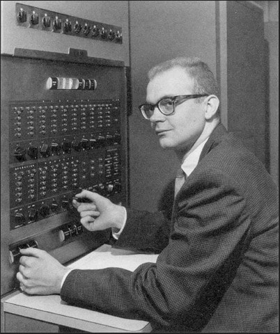

Биография
Родился в семье преподавателя. Его отец преподавал бухгалтерский учёт, а также занимался печатным делом на дому как любитель (этим можно объяснить последующий интерес Дональда к этому делу и такие разработки как ΤΕΧ). С юных лет в нём наблюдалась склонность к математике, физике и музыке. Окончил с отличием отделение математики Кейсовского технологического института (бакалавр, 1960). Одновременно за значительные достижения в программировании был удостоен степени магистра. Спустя три года получил докторскую степень в Калифорнийском технологическом институте. Преподавал там же математику и одновременно работал консультантом по проблемам разработки программного обеспечения в корпорации Burroughs. В 1968 году перешёл в Стэнфордский университет. В 1968—1969 годах также работал в Институте оборонных исследований. Приглашённый профессор математики в Университете Осло (1972, 1973). В Стэнфорде под его руководством защищено 28 докторских диссертаций.
На январь 2013 года Кнут занимал 37-е место в списке самых цитируемых авторов в области информатики согласно проекту CiteSeer[9]. Член редакционных коллегий многих научных журналов. Действительный член Американской академии искусств и наук (1973), Национальной академии наук США (1975)[10], Национальной инженерной академии США (1981)[11]. Член Американской гильдии органистов (с 1965 года), Американского математического общества (1961), Ассоциации компьютерной техники (ACM) (1959), Математической ассоциации Америки (1959), Общества промышленной и прикладной математики (1965), действительный член Британского компьютерного общества (1980), почётный член IEEE (1982). Иностранный член Лондонского королевского общества (2003)[12], Российской академии наук (29 мая 2008)[13][14]. Почётный доктор многих университетов. Почётный доктор СПбГУ (1992). Удостоен многочисленных премий и наград в области программирования и вычислительной математики, среди которых:
- 1971 — Премия имени Грейс Мюррей Хоппер
- 1972 — Стипендия Гуггенхайма
- 1974 — Премия Тьюринга
- 1978 — Гиббсовская лекция
- 1979 — Национальная научная медаль США
- 1980 — Премия Уоллеса Макдауэлла
- 1986 — Премия Стила за серию научно-популярных статей
- 1988 — Медаль Франклина
- 1992 — Мемориальные лекции Вейцмана
- 1995 — Премия Харви
- 1995 — Медаль Джона фон Неймана
- 1996 — Премия Киото за достижения в области передовых технологий
- 1998 — Fellow Awards
- 2010 — BBVA Foundation Frontiers of Knowledge Awards
- 2011 — Медаль Фарадея
- 2011 — Лекция Тьюринга
- 2016 — Лекция Джона фон Неймана1978 — Гиббсовская лекция
- 1979 — Национальная научная медаль США
- 1980 — Премия Уоллеса Макдауэлла
- 1986 — Премия Стила за серию научно-популярных статей
- 1988 — Медаль Франклина
- 1992 — Мемориальные лекции Вейцмана
- 1995 — Премия Харви
- 1995 — Медаль Джона фон Неймана
- 1996 — Премия Киото за достижения в области передовых технологий
- 1998 — Fellow Awards
- 2010 — BBVA Foundation Frontiers of Knowledge Awards
- 2011 — Медаль Фарадея
- 2011 — Лекция Тьюринга
- 2016 — Лекция Джона фон Неймана